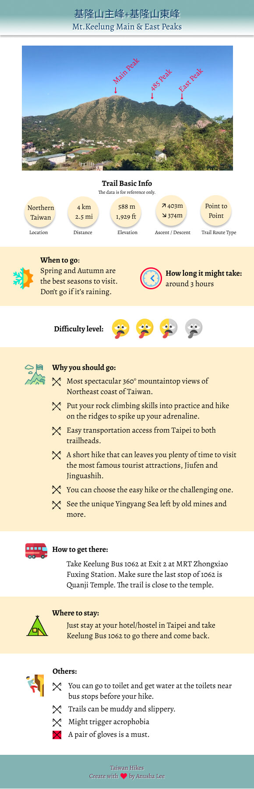

Mt. Keelung Main Peak and East peak: A Short Trail with Mountain-Ocean View and You Can Choose the Easy or the Hard Way

Disclaimer: Please note some of the following are based on my
personal condition, and I will try to provide the latest and
correct information as possible as I can. Please feel free to let
me know if I make any mistake and thank you for reading. Please
also note that your safety is your own responsibility.
Table of Contents:
About Mt. Keelung
Mt. Keelung is very close to the popular tourist attractions, Jiufeng 九份 and Jinguashih 金瓜石, and not far away from Mt. Teapot 茶壺山. Like Mt. Teapot, it’s very easy to get to Mt. Keelung’s two trail heads by taking Bus 1062. It’s very short if you take the whole trail, around 4 km (2.5 miles), but you can see the most beautiful mountain and ocean views, and get to do both easy roaming and rock climbing. Also, like Mt. Teapot 茶壺山, you can decide to take the challenging one or just the easy part. After the hike, you can take a slow walk to Jiufeng to enjoy local food for lunch.

How to Get There
There are several ways to get to the trailhead. My favorite and recommended one is to take Keelung Bus 基隆客運1062 from Exit 2 MRT Zhongxiao Fuxing Station 忠孝復興捷運站 and get off at Jiufeng Old Street Stop 九份老街站. After getting off, continue to walk for about 300 meters and you will find the bos stop. You can find toilets on both sides of the road.
Other options:
Take Keelung Bus 788 from Keelung Train Station.
Take Bus 965 from MRT Fuzhong Station.
Take Keelung Bus 788 from Keelung Train Station.
Take Bus 965 from MRT Fuzhong Station.

The Easiest One:
GPS coordinates of Mt. Keelung trailhead: 25.111772, 121.847430
After getting off at Geding Stop, you walk back toward Jiufeng direction a few meters and you can see the trail head with a sign. If you take this one, you just follow the endless stone stairs and go all the way up. There are 3 pavilions (the last one is your destination) to take a short break and enjoy the mountain views. You still can’t see the sea views from here. So, you have to keep going.

Some people might argue that taking endless stone stairs isn’t easy, and I agree with that. But if you don’t hike regularly or are not familiar with the jungle-like terrains in Taiwan, I still recommend you to start from here, and you won’t hike on the wrong trail as long as you keep going up. All the efforts will pay off when you get to the top.

When you finally get to the top, which takes around 30 minutes or more, you’ll see the final pavilion on this trail and a small square in front of it. This is your hiking destination, the summit of Mt. Keelung, 588 meters (1,929 feet) above the sea level, and there’s a Class 3 Triangulation Stone here.

You can take your time, watch the surroundings, and be amazed by the mountains and the ocean if the weather is gorgeous. You can also see Keelung Island 基隆嶼 on the right in the following photo.

After you think you are ready to go, you can take the same stone stairs back to the main road and walk to Jiufeng or nearby museums and tourist attractions.

From East Peak to Main Peak but Not Recommended
If you decide to continue the hike, you need to find another trail entrance, which is next to the electric power lines. When you take this trail, the grass on both sides can be very tall, but the trail isn’t too difficult to find. You can feel you are descending, and you will see a big rock slope.

I took this one from the stone stairs before and it was drizzling. I didn’t know there was a very steep rock slope waiting for me. When I saw that, I think my heart skipped one beat, but my friend and I still kept going. Hiking on this trail during the rain is not fun. Therefore, if the weather is wet, please turn back.

Even though it’s not raining, it might still make your cringe a little bit just by taking a look down the slope. I didn’t take a photo from the top down during my both trips, because I got panic and just wanted to move on as soon as possible. There are ropes for you to grab, but I think looking down the slope will make you start panicking if you aren’t comfortable with height.

Just take it slow and make sure your hands hold on tight with the rope, and you should be fine. During my first attempt to go down the slope, I slipped, and my friend later told me that she saw me hitting the rock. Luckily, the pushups I do at home payed off, so my hands were still holding the rope tightly, and I had a small bag in front of my chest, and it provided some cushion for me.

When you get down the steep slope, the trail becomes relatively flat and easier to hike, and you will get to see a hill with a tree in the middle of the top. This is called 485 Peak 485峰. As you can guess, it’s 485 meters (1,591 feet) above the sea level. Standing here, you get to see how far you’ve gone, and you can see Mt. Keelung East Peak from here, too.

After you are ready to leave 485 Peak, Mt. Keelung East Peak, 467 meters (1,532 feet), isn’t far. But you will see a trail junction. Please take the one ahead of you if you want to go to the east peak. The one going down will take you back to the other side of the trail head. Unless the weather isn’t good, I strongly suggest you to go to Mt. Keelung East Peak. The views there are even more amazing than the ones you see on the main peak.

After you finish the east peak, the sightseeing is over and what’s waiting for you is the challenging jungle hike. I’ll explain more in the following.
The Hard Core One: from East Peak to Main Peak
After I took this hike from both ends, I highly recommend you to take this one. After you get off Geding Stop, you will see a pavilion-like bus stop, and there’s a stone step trail going down. Take this one and you will get to see the sign before another stone step trail.

After this, you get to walk on the regular road again. This trail head isn’t that obvious compared to the other one, and you’ll see a road junction and you have to take the left to get to the trail head.

Once you see the trail head with many plastic ribbons, the jungle trail is waiting for you. Although it’s like a jungle, the trail isn’t too difficult to find. There are many plastic ribbons on the trees left by other hiking associations. Basically, you just follow the those if you get confused.
GPS coordinates of Mt. Keelung East Peak trailhead: 25.115219,121.852747

However, there are many rocks and big trees here, and it’s very steep and very slippery on some parts of the trail. It's better to have a pair of yarn gloves with you because you need to grab the ropes or tree roots from time to time.

There's nothing much I can say about this part because the trail is steep and nothing much to see inside the woods, either. All you can do is to keep going and looking forward to seeing the view when you get to the summits. If it’s raining, it will be more difficult to hike on this trail, not to mention the slope climbing part later.

Once you get to the ridge, you will see a trail junction. Take the right one, and you’ll arrive Mt. Keelung East Peak very soon. I personally thought the views on the east peak were more amazing than those on the main peak and 485 Peak, but perhaps this is because this was what I first saw after taking the treacherous trail first. But, no matter what, the views are so spectacular here. If I dare to hike here again, I’d stay on the east peak at least for 30 minutes. Because I was with a group, I moved on after taking as many photos as I could.

While on the east peak, you can see 485 Peak and Mt. Keelung Main Peak ahead of you, and the steepness of those peaks are quite impressive. From my experience, take your time to climb those slopes. Don't rush just because you sense people behind you are losing patience. I usually ignore them because I know it will take way much longer if anyone of us falls or gets injured. However, if you think your fear of height kicks in, please don’t hesitate to tell your guide and ask for help. Local hikers are very friendly when you need their help.

Climbing up the steep rock slope might be slightly easier than going down, but it was still scary. I could feel my arms and legs were very tight when trying to grab the rope and get a spot for my feet to step on. I think my pose might look funny, too, but I didn’t really care. The only thought I had at that time was I could get up the safer place in one piece.

Finally, I got up there safely, but I think I also used up all my strength. We still had to go uphill, and I was already huffing and puffing. The views on 485 Peak were also amazing, and it was totally wroth the panic.

The main peak was still ahead, so we continued our hike. After going through tall grass, we reached the main peak. It was already crowded there because of the good weather, and we finally could take a long break to have lunch.
What’s next is the long stone stairs going down. Compared the dangerous slopes, the stone stairs that leads to the other end of the trail are nothing. Plus, watching the beautiful Jiufeng and Jinguashih mountains will make you feel much better.

To finish those peaks, it takes less than 3 hours from the difficult end to the easy one. It was a little bit crowded on the day when I hiked. So, it could take less time if not many people are there. If you are okay with height and want to take a challenging but a short hike, this one is definitely for you. After you leave the trail, the bus stop is very close. I was able to catch the bus right after I finished my hike.

Thoughts about This Hike:
What makes Mt. Keelung Trail so special is the wonderful mountain and ocean views, other nearby tourist attractions, and easy transportation. That’s why I highly recommended you to enjoy this one if you want to do as many things as you in Jiufeng within one day. You can also click here for more details about Mt. Teapot, which is not far away from Mt. Keelung.
Map and Itinerary
Group Hike or Solo Hike: Group hike with 新北市山岳協會 THMA
Date of Hike: November 17, 2019
Date of Hike: November 17, 2019
Route map for Mt-Keelung-Main-and-East-Peaks by Anusha Lee on plotaroute.com
Click Menu in the map to download, print or share the map.
Click to change the speed to meet your condition.
to change the speed to meet your condition.
Note:
Due to GPS accuracy setting, there may be some difference between my GPS tracking and the exact distance. Please check the infographic above for the more accurate data.
Click
to change the speed to meet your condition.Note:
Due to GPS accuracy setting, there may be some difference between my GPS tracking and the exact distance. Please check the infographic above for the more accurate data.
Based on my hike on November 17, 2019
09:00 Started the hike. The guide took some time to explain the trail.
09:23 Reached the trailhead to Mt. Keelung East Peak
10:11 Reached the first big slope
10:20 Reached Mt. Keelung East Peak
10:58 Arrived at the second big slope
11:06 Reached 485 Peak and took photos
11:30 Reached Mt. Keelung Main Peak and had lunch
11:47 Got down from the stone stairs
12:00 Reached the trailhead and bus stop
Total time: 3 hours, including breaks